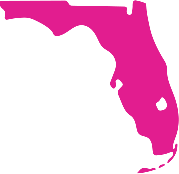
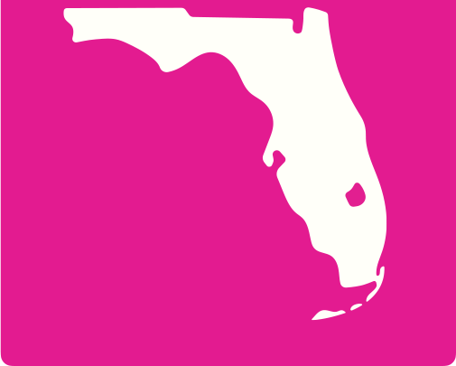
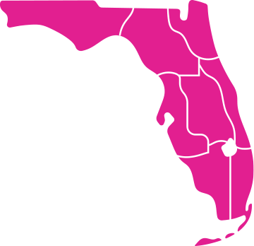
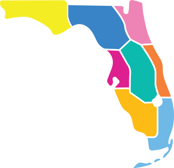
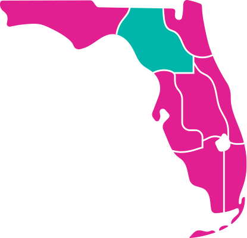
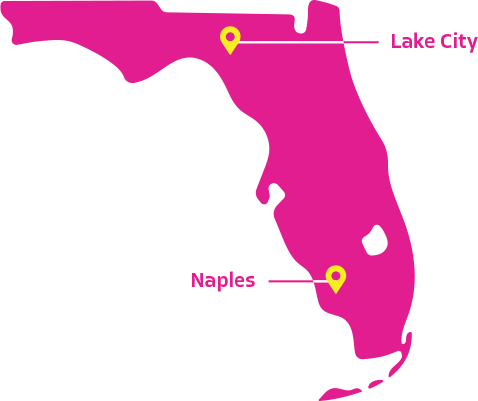
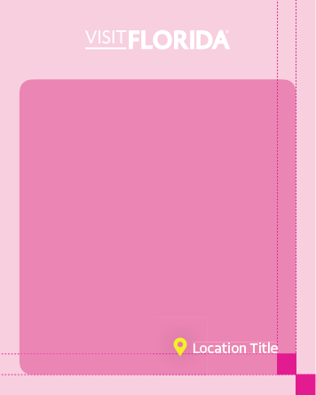

GRAPHIC
ASSETS
LOCATION MAP
The VISIT FLORIDA brand includes two approved color variations of the primary Florida map: Bougainvillea and White Sand.
Both versions are designed for flexible use across multiple mediums, including video, social, web and digital layouts. The inverted Florida map can be used on top of both color and imagery provided there is sufficient contrast for legibility. The map can be used at both large and small scales with a recommended smallest scale of 50x50px.
When using the brand map, always ensure that Lake Okeechobee and the Florida Keys are included, as these are essential geographic identifiers that maintain visual consistency.
Use only approved versions and avoid altering the map's proportions, features, or color treatments outside of the brand colors and imagery.
PRIMARY FLORIDA MAP

INVERTED FLORIDA MAP

REGIONAL LOCATION MAP
The VISIT FLORIDA brand includes two regional location map styles: single-color and multicolor.
Both versions are available to support a variety of use cases.
SINGLE-COLOR REGIONAL MAP
Designed for clarity and versatility, the single color regional map is best suited for web applications, particularly where interactive or functional use is required (e.g., hover states).
MULTI-COLOR REGIONAL MAP
This version offers a more illustrative and visually engaging representation of Florida's regions. It is appropriate for use across web, social media, and print, where a more expressive or branded aesthetic is desired.
Use maps consistently and according to context, ensuring they align with the intended purpose and overall visual tone of the campaign or platform.
SINGLE-COLOR REGIONAL MAP

MULTI-COLOR REGIONAL MAP

MULTI-COLOR REGIONAL MAP COLOR PALETTE
The VISIT FLORIDA multi-color regional map incorporates a range of approved supplemental colors designed to complement the primary brand palette within this specific graphic.
These tones are lighter variations derived from the core brand colors and are used to create visual balance within these combined colors.
These secondary colors are exclusive to the regional map and should not be used elsewhere.
All other design applications must rely strictly on the primary brand color palette.
LOCATION MAP CONTINUED
When using the Florida map, there may be occasions when specific regions or cities need to be highlighted or called out. The Flagua brand color should be used to emphasize regions and the Solar Flare brand color should be used to mark city locations with pins.
For city callouts, the connecting stroke between the label and the corresponding pin should be reversed out for maximum legibility.
This approach ensures the stroke remains clearly visible against both the map and any background elements. To maintain visual consistency and brand integrity, no other colors should be used for map highlights or annotations.
REGIONAL MAP HIGHLIGHT

CITY LOCATION CALLOUT

LOCATION PIN
The Location Pin is a supporting visual element designed to identify specific destinations or cities in Florida.
The pin must always be placed in context, either over a map or image, to reinforce geographic relevance. It should never be used as a standalone graphic or decorative icon.
The pin is not intended to function as a primary graphic or logo. It should never be enlarged disproportionately, used in isolation, or treated as a hero element.
The location pin must appear in Solar Flare, the primary brand color. When legibility requires, White Sand may be used as an alternate. The minimum size of the pin can be used at 8x12px.
The pin should complement the design without distracting from primary messaging or photography. It should feel integrated, understated, and purposeful.

Spacing of the location and pin on image should equal width of the exterior border.
Typography should be 75% of the height of the pin, centered horizontally with the pin.